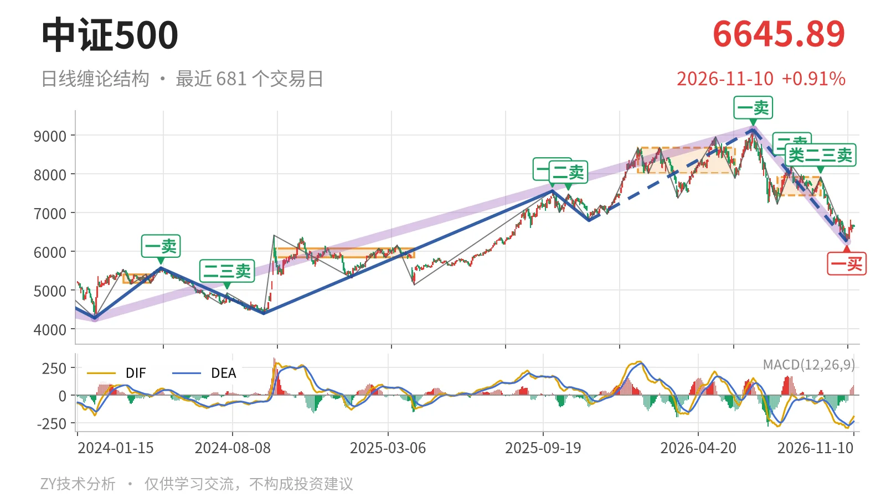
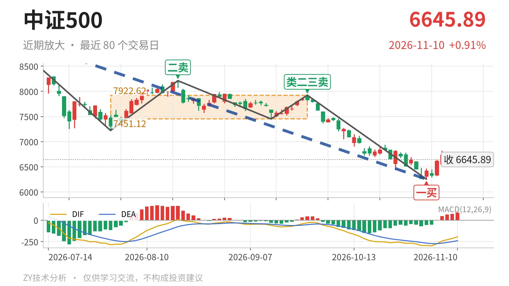

中证500｜一买后反抽未成笔，7451成坎

最近日线中枢 7451.12—7922.62点，收盘位于中枢之下
一句话：日线下跌段未结束，反抽7451点下方偏弱
📉 走势结构：7月1日以来下跌段未见结束
更大级别上，7月1日至11月2日的下跌走势还没结束；日线线段也处在7月1日以来的下跌线段中。7月1日一卖在9147.56点，后面8月18日二卖8211.31点、9月22日类二三卖7922.62点，一个比一个低，反弹高点逐步下压。11月2日虽然砸出6253.79点后出现反抽，但11月3日至11月10日只有6根K线，反抽最高6819.12点，连一笔都不够，更谈不上反向线段。日线层面看，2025年11月24日至2026年7月1日的上涨段把价格推到9147.56点后转入当前下跌，这个下跌还在延续。

📍 中枢位置：收盘低于最近中枢下沿
最新收盘6645.89点已经落在最近日线笔中枢下方。该中枢位置在7月30日至9月22日，区间是7451.12—7922.62点，还没完成。收盘较下沿7451.12点低约10.8%。中枢本身是下移的：前一个1月26日至6月8日的中枢还在8014.66—8671.35点，现在这个中枢落到7451.12—7922.62点。价格不但离开中枢，还收在下沿下方，说明7月1日以来的下跌不是中枢内震荡，而是向下脱离。
🧭 买卖点：11月2日一买只对应日线笔级别
11月2日一买落在6253.79点，所在下跌笔9月22日至11月2日已经结束。这个一买目前没有被跌破，但只能对应日线笔级别反抽。上方2025年11月24日线段三买6797.50点在后续下跌中被跌破，所以现在的一买还不能看成线段级别转折。后续若反抽能成笔并重新逼近7451点，才谈得上对最近中枢的回抽；在那之前，一买先按日线笔级别反抽对待。

⚖️ 背驰：绿柱面积收窄但DIF仍创新低
最新DIF仍在-194.5，零轴之下，当前这组下跌背驰并不完整。比较两段同向下跌笔：7月1日至7月30日下跌笔，绿柱面积2687，DIF低点-285.2；9月22日至11月2日下跌笔，价格从7221.95点破到6253.79点，绿柱面积1782，DIF低点-295.6。价格创新低，绿柱面积由2687缩到1782，但DIF低点没有抬高，反而继续下移。这不是标准的“新低不新弱”，一买对应的更多是绿柱面积层面的力度衰减，而非日线趋势背驰的完整信号。
🔎 关键观察：反抽不回7451点上方仍是三卖结构
结构上按偏弱处理。当前收盘6645.89点在最近中枢下沿7451.12点下方，后续若反抽成笔后仍回不到7451点上方，结构上就构成对7月30日至9月22日中枢的日线三卖。若能重新站上7451点，则7月1日以来的调整更可能只是中枢扩展，而不是单边下跌。下方6254点附近若再创新低，则11月2日一买被破坏，下跌段还要继续。在站回7451点之前，整体结构偏弱，反抽暂不改变下跌性质。
⚠️ 本文为基于公开行情数据的缠论技术结构记录，由程序自动计算并生成，仅供学习交流，不构成任何投资建议。市场有风险，投资需谨慎。